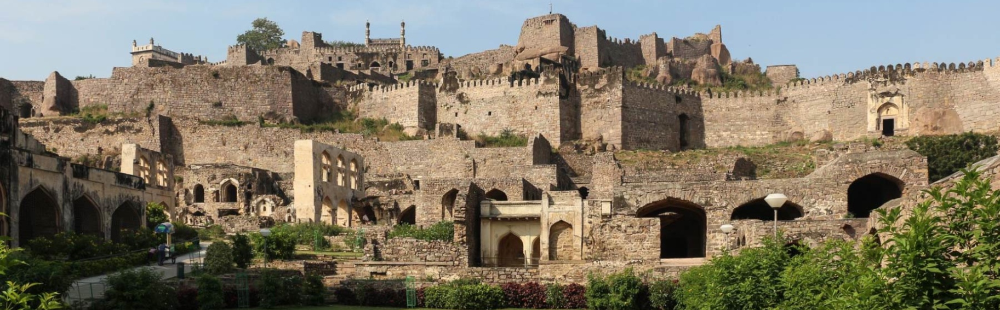
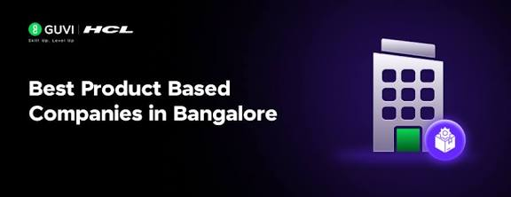

Hyderabad

Hyderabad IT Industry: Hyderabad is one of India's fastest-growing IT destinations and is well known for HITEC City and Cyberabad. The city hosts many global technology companies, software development centers, and innovation hubs. Hyderabad is a leader in cloud computing, artificial intelligence, cybersecurity, enterprise software, and digital transformation services. Its excellent infrastructure, skilled workforce, and government support have attracted many multinational companies. Today, Hyderabad is considered one of India's top IT cities alongside Bengaluru and Chennai.
Serivce Based IT Company List
- Tata Consultancy Services (TCS)
- Infosys
- Cognizant Technology Solutions (CTS)
- Wipro
- Accenture
- Tech Mahindra
Product Based IT Company List
- Microsoft
- Amazon Development Centre
- Oracle
- ServiceNow
- Salesforce
Service Based Companies

Tata Consultancy Services (TCS)
| Company Name | Tata Consultancy Services (TCS) |
|---|---|
| About the Company | TCS is one of the world's largest IT services and consulting companies. It provides digital transformation, enterprise solutions, cloud services, AI, and software development for global clients. |
| Founded Year | 1968 |
| Founder / CEO | Founder: Tata Group CEO: K. Krithivasan |
| Head Office | Mumbai, Maharashtra, India |
| Hyderabad Office Location | Deccan Park, Madhapur, Hyderabad |
| Services / Products | IT Services, Cloud Computing, AI, Digital Transformation, Business Consulting |
| Official Website | Visit Website |
| Google Maps Location | Live Location |
Tech Mahindra
| Company Name | Tech Mahindra |
|---|---|
| About the Company | Tech Mahindra is a multinational IT services company offering software development, digital transformation, cloud solutions, AI, and business process services to global customers. |
| Founded Year | 1986 |
| Founder / CEO | Founder: Mahindra Group CEO: Mohit Joshi |
| Head Office | Pune, Maharashtra, India |
| Hyderabad Office Location | HiTech City, Madhapur, Hyderabad |
| Services / Products | IT Services, AI, Cloud Solutions, Software Engineering, Cybersecurity |
| Official Website | Visit Website |
| Google Maps Location | Live Location |
Product Based Companies
Microsoft India
| Company Name | Microsoft India |
|---|---|
| About the Company | Microsoft's Hyderabad campus is one of the company's largest development centers outside the United States, focusing on Azure, AI, Office, Windows, and enterprise software. |
| Founded Year | 1975 |
| Founder / CEO | Founder: Bill Gates & Paul Allen CEO: Satya Nadella |
| Head Office | Redmond, Washington, USA |
| Hyderabad Office Location | Gachibowli, Hyderabad |
| Services / Products | Windows, Azure, Microsoft 365, GitHub, AI, Copilot |
| Official Website | Visit Website |
| Google Maps Location | Live Location |
Oracle India
| Company Name | Oracle India |
|---|---|
| About the Company | Oracle develops enterprise database software, cloud infrastructure, business applications, and AI-powered enterprise solutions. Hyderabad is one of Oracle's major development centers in India. |
| Founded Year | 1977 |
| Founder / CEO | Founder: Larry Ellison, Bob Miner & Ed Oates CEO: Safra Catz |
| Head Office | Austin, Texas, USA |
| Hyderabad Office Location | Oracle India Pvt. Ltd., Gachibowli, Hyderabad |
| Services / Products | Oracle Database, Oracle Cloud, Java, ERP, Enterprise Applications |
| Official Website | Visit Website |
| Google Maps Location | Live Location |